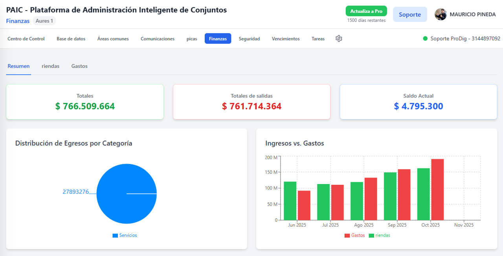

¡De Horas a Segundos! Pregúntele a PAIC por sus informes.
Consultar datos significa abrir archivos, aplicar filtros y cruzar información. Su asistente lo hace en un instante, con una sola pregunta.
Funcionalidad Clave: Consultas de Base de Datos por IA
Gracias a su conexión con la Base de Datos Central, el chatbot de PAIC puede responder a cualquier pregunta financiera, de residentes o de proveedores en lenguaje natural. ¡Adiós a los filtros de Excel!
- 💡 Informes financieros detallados al momento.
- 💬 Pregunte en español, obtenga la data estructurada.